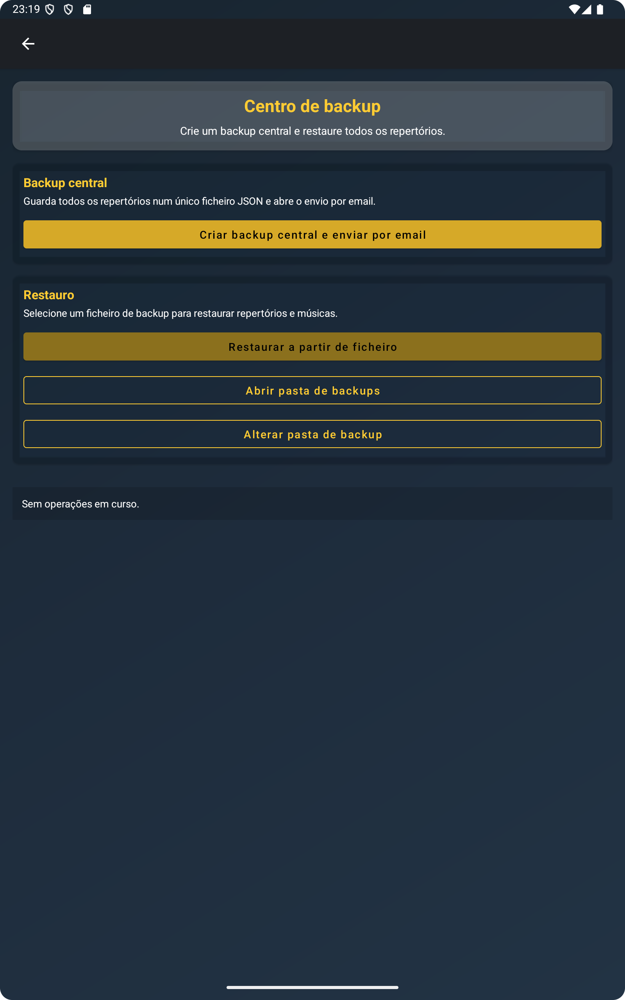
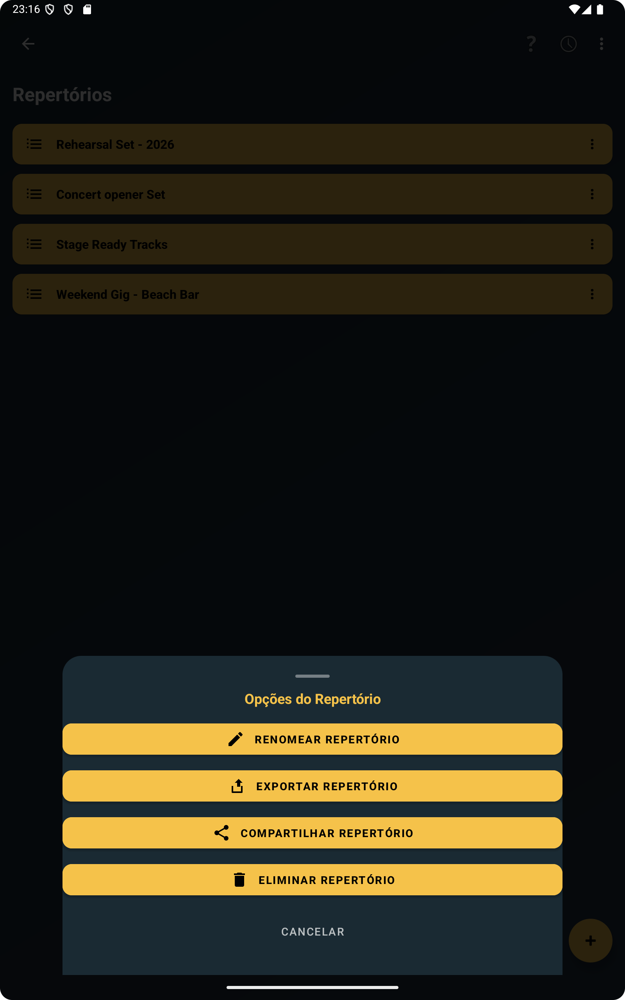
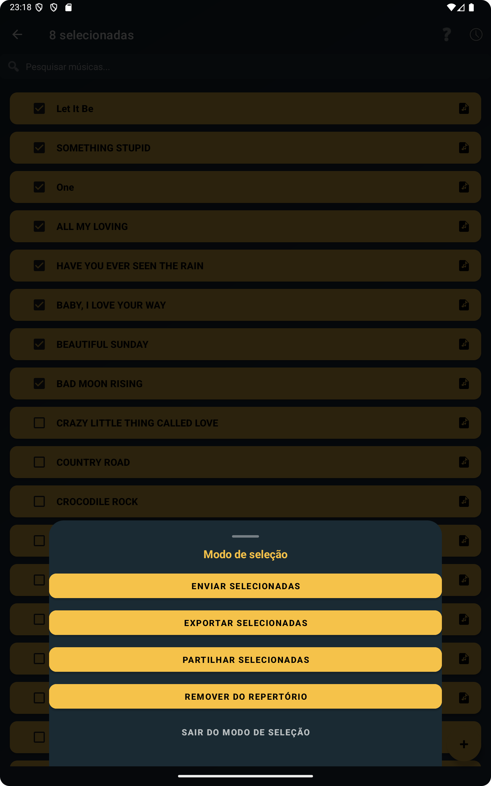
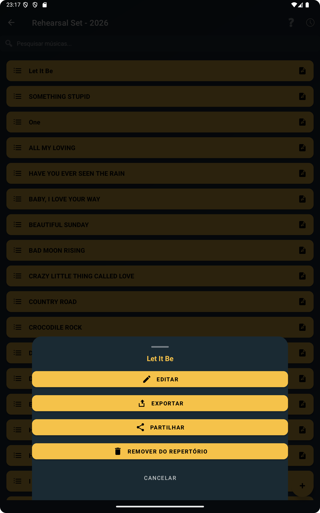

Guarda as tuas músicas em segurança fora do dispositivo
Um telemóvel ou tablet é prático para ensaio, mas não devia ser o único lugar onde o repertório existe. Se toda a preparação vive num só dispositivo, qualquer problema nesse dispositivo pode transformar-se rapidamente num problema para o próximo ensaio ou atuação. É por isso que exportar músicas e repertórios faz diferença. Ficas com uma cópia que existe fora da app e fora do dispositivo.
Na prática, o ChordFlow permite criar ficheiros a partir do teu repertório para guardares cópias de segurança noutro dispositivo, no computador ou no teu fluxo de armazenamento preferido. Isto é útil mesmo quando nada está mal com o telemóvel hoje, porque o backup funciona melhor quando é feito antes de ser preciso.
A imagem seguinte ajuda a mostrar essa ideia base: o backup não é um sistema separado e complicado. Faz parte do fluxo normal do repertório dentro da app.

Partilha músicas e repertórios por email ou apps de mensagens
O backup é apenas um lado do fluxo. A partilha é muitas vezes tão importante como ele. No ChordFlow podes exportar um repertório completo, uma única música ou várias músicas selecionadas ao mesmo tempo.
Os ficheiros podem ser enviados por email, WhatsApp ou qualquer outra app de partilha disponível no dispositivo. Isso torna a funcionalidade útil para muito mais do que backup pessoal. Podes enviar um repertório preparado para outro músico, mover músicas selecionadas para um segundo dispositivo que usas em palco, ou guardar uma cópia limpa de um repertório específico antes de fazer alterações.
Também significa que não ficas preso a um único fluxo rígido. Alguns músicos preferem enviar os ficheiros para si próprios por email. Outros usam o WhatsApp para mover material rapidamente entre dispositivos. Outros ainda guardam cópias no computador depois do ensaio. O importante é que o ficheiro exportado pode circular pelas ferramentas de partilha que já usas no dia a dia.
A próxima screenshot apoia esse caso de uso prático ao mostrar como exportar um repertório completo encaixa naturalmente na preparação do ensaio.

Por vezes não precisas do repertório inteiro. Podes querer apenas uma música, ou um pequeno grupo de músicas selecionadas para um ensaio específico. O ChordFlow também suporta isso, o que torna a partilha mais precisa e evita enviar material desnecessário.

Transfere o teu repertório facilmente entre dispositivos
Muitos músicos não usam apenas um dispositivo. Podes preparar músicas no telemóvel e depois preferir lê-las no tablet durante o ensaio. Ou podes usar um tablet em casa e ainda assim querer uma cópia compacta no telemóvel quando viajas. A exportação facilita muito essas mudanças porque o repertório não fica preso a um só lugar.
Isto facilita transferir o repertório para outro dispositivo sem perder o trabalho já feito. Telemóvel para tablet, tablet para telemóvel, ou Android para computador tornam-se fluxos simples de ficheiros em vez de uma migração arriscada. Isso é especialmente valioso se usas um dispositivo para preparar e outro para atuar.
Se as músicas já estiverem bem organizadas, como se descreve em este artigo sobre repertórios e organização, transferi-las entre dispositivos torna-se ainda mais simples porque estás a mover um repertório limpo e utilizável, e não um conjunto solto de músicas espalhadas.
Prepara um backup antes de mudar de telemóvel
Mudar de telemóvel é um dos momentos em que muitos músicos se apercebem da quantidade de trabalho que está guardada dentro da app. Não são apenas títulos de músicas. Muitas vezes é um repertório curado, com ordem definida, músicas editadas, material importado e listas prontas para uso real.
Exportar o repertório antes de mudar de dispositivo é um dos hábitos mais seguros que podes ter. Em vez de confiar que o processo de migração vai tratar de tudo na perfeição, já tens um ficheiro de backup preparado com antecedência. Isso reduz o stress e dá-te um caminho claro de recuperação se alguma coisa falhar durante a mudança.
Também ajuda quando queres manter um dispositivo mais antigo como backup de ensaio. Podes exportar do telemóvel atual, enviar os ficheiros para o segundo dispositivo e manter ambos prontos sem reconstruir o repertório manualmente.
Restaura as músicas sempre que precisares
Um backup só faz sentido se puder ser usado mais tarde. No ChordFlow, os ficheiros exportados não são arquivos mortos. Podem voltar a entrar no teu fluxo quando precisares. Isso significa que o backup serve tanto como proteção como ferramenta de transferência.
Se restaurares depois de mudar de dispositivo, recuperas as músicas sem reconstruir tudo de memória. Se restaurares material selecionado noutro dispositivo, consegues manter o repertório principal e o dispositivo de estudo ou viagem alinhados. E se exportaste uma versão limpa antes de grandes edições, tens sempre uma cópia estável a que podes voltar.
Isto liga-se naturalmente com o artigo sobre importação, porque a mesma lógica prática funciona nos dois sentidos: trazer músicas para dentro quando é preciso e exportá-las quando queres proteger, partilhar ou mover o teu trabalho.

O backup funciona sem internet nem contas de utilizador
Muitas apps empurram os utilizadores para sistemas de conta e sincronização permanente online. O ChordFlow segue um caminho mais prático neste fluxo. O backup no ChordFlow não requer conta nem ligação permanente à internet.
Isto faz diferença para músicos porque ensaios e atuações nem sempre acontecem em condições ideais de rede. Podes querer preparar tudo com antecedência, exportar localmente e guardar esses ficheiros à tua maneira. A app suporta esse fluxo mais simples. O processo de backup fica sob o teu controlo, em vez de depender do estado de login ou da disponibilidade da cloud no momento exato em que precisas dela.
Na prática, isso significa que podes manter cópias de segurança, enviar ficheiros pelas apps de partilha que já usas e mover o repertório entre dispositivos sem transformar o backup num projeto técnico.
FAQ
Posso fazer backup das músicas sem internet?
Sim. O backup e a exportação não dependem de ligação permanente à internet, o que os torna muito práticos para ensaio e preparação offline.
O backup inclui repertórios?
Sim. Podes exportar repertórios completos como parte do teu fluxo de backup e partilha.
Posso transferir as músicas para outro dispositivo?
Sim. A exportação facilita mover músicas e repertórios entre dispositivos como telemóvel, tablet ou computador.
Posso restaurar as músicas mais tarde?
Sim. Os ficheiros exportados podem ser importados novamente mais tarde quando precisares de recuperar ou mover o repertório.
Leitura relacionada
Guarda uma cópia segura das músicas que já preparaste
Quando o teu repertório pode ser exportado, partilhado e restaurado sem contas extra nem configurações complicadas, torna-se muito mais simples trabalhar entre dispositivos e proteger a preparação que já fizeste. O ChordFlow ajuda a manter as tuas músicas portáteis em vez de as deixar presas a um único telemóvel ou tablet.
Gratuito · Sem anúncios · Funciona offline